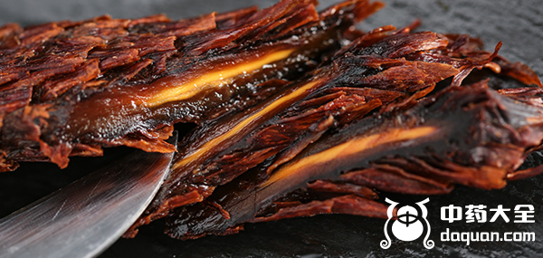
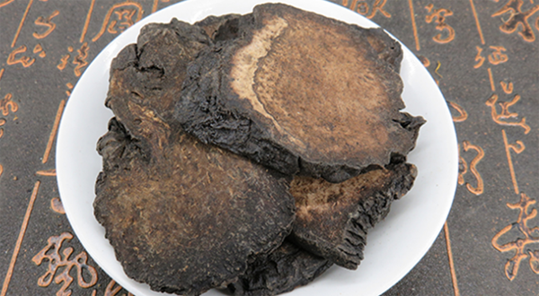

原文出处:本文转载自中药大全网。
原文连接:https://www.daquan.com/post/10943.html
原文连接:https://www.daquan.com/post/10943.html
肉苁蓉被称为沙漠人参，因为肉苁蓉的养身效果非常好，肉苁蓉中主要被称为沙漠人参的是阿拉善肉苁蓉，阿拉善肉苁蓉的药效相比较普通的肉苁蓉更好，价钱也更昂贵一些。现在野生的非常少见，因为沙漠人参肉苁蓉的功效与作用非常好同时也遭到了过分开采。
沙漠人参肉苁蓉的功效
1、温补肾阳

沙漠人参肉苁蓉有着温补肾阳的功效，补肾阳但是不伤阴是肉苁蓉在补肾阳脱颖而出的优势，帮助阳气生长，并不是大补。其中阿拉善肉苁蓉也有着这种优势并且助阳之力更强。
2、补益精血

沙漠人参肉苁蓉有着补益精血的作用，人体精血缺乏会导致身体虚弱，气血不足，浑身无力。肉苁蓉有着补益精血的功效，阿拉善肉苁蓉补益之力较普通肉苁蓉更强。
3、润肠通便
沙漠人参肉苁蓉有着润肠通便的作用，促进肠胃蠕动，加速人体废物代谢，还有给肾精补充水分，能帮助排便，还能治疗长期便秘的情况。
沙漠人参肉苁蓉的作用
1、男性壮阳
沙漠人参肉苁蓉是在很多古方中都有出现的壮阳药，其壮阳功效非常好，不仅可以平时保养时食用，如果有早泄等男性疾病可以吃肉苁蓉治疗。
2、女性调经治不孕

女性宫寒会导致月经不调，痛经等月经疾病，严重的甚至会导致不孕不育，服用沙漠人参肉苁蓉可以暖宫，帮助淤血排出，和保胎。
3、增强活力
沙漠人参肉苁蓉有着增强活力的成分，可以驱除疲惫，有精神，并且头脑清晰，是非常好的上班保健的药材，适合上班族食用。
4、排毒养颜
沙漠人参肉苁蓉有着排毒养颜的作用，肉苁蓉可以润肠通便，帮助人体废弃物排出，同时还能调节内分泌补气血，女性吃肉苁蓉气色会越来越红润有光泽。
结语：通过上文的介绍，相信大家都知道了沙漠人参肉苁蓉的功效与作用，希望朋友们能适量的使用沙漠人参肉苁蓉来养身。
推荐阅读：